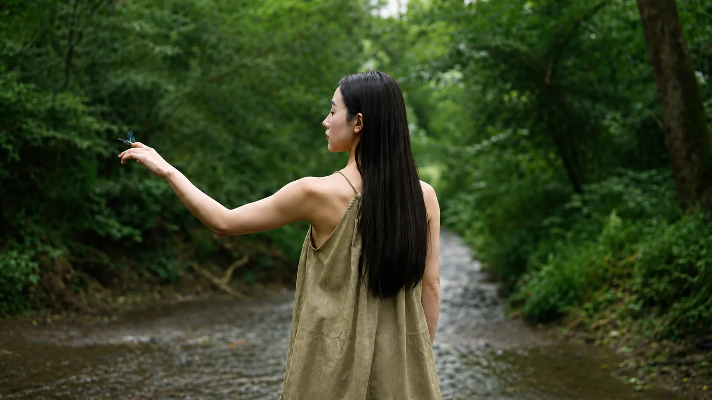
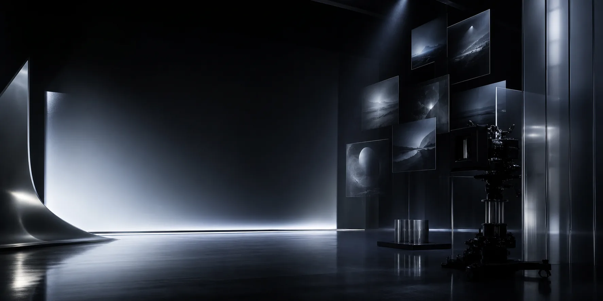
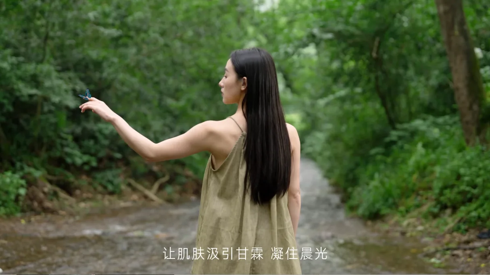
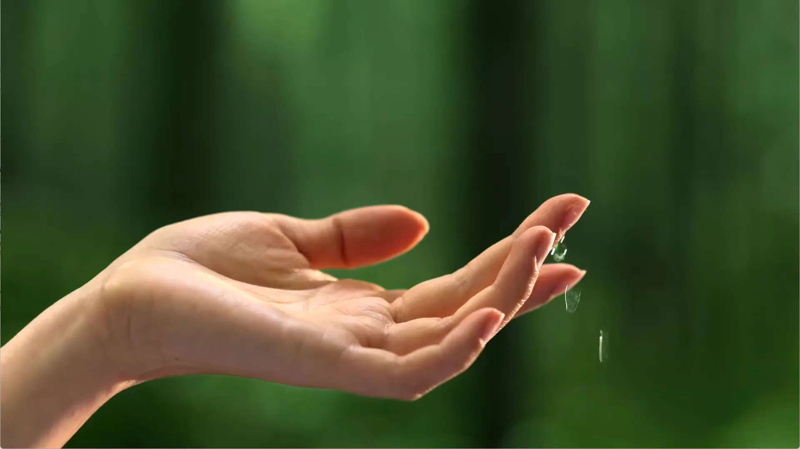
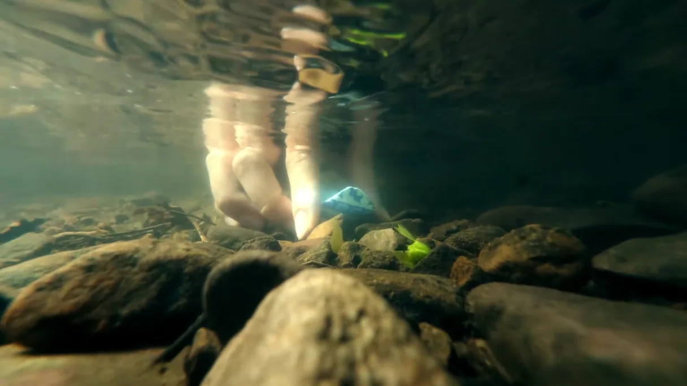
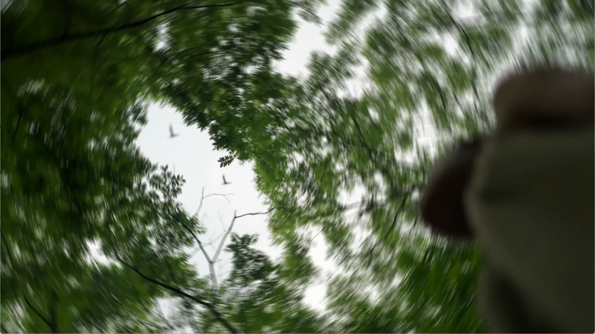
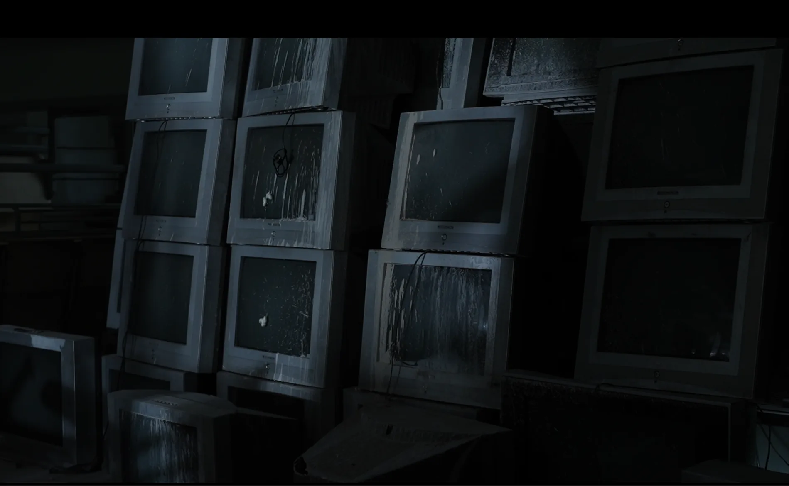
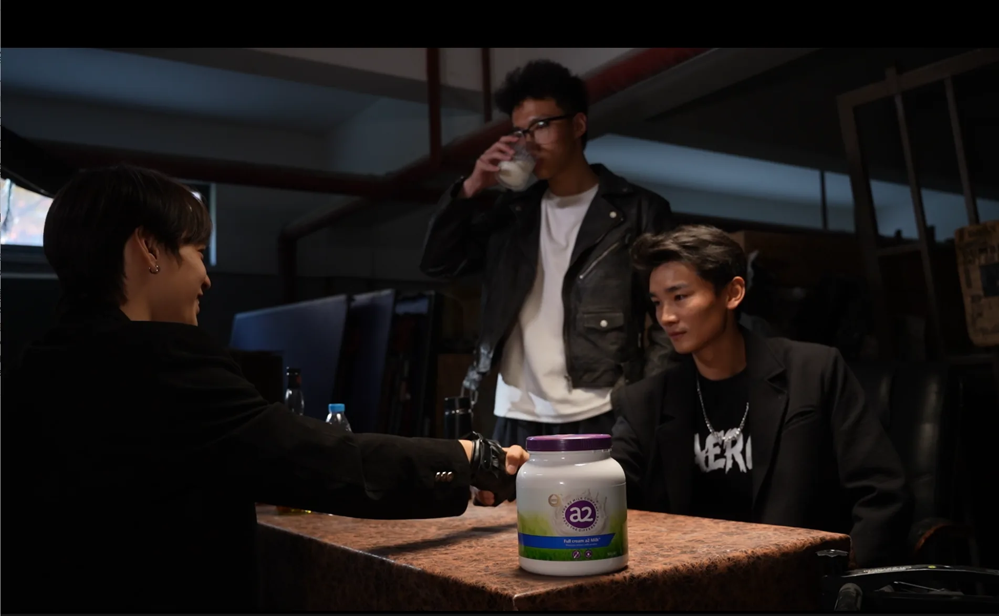
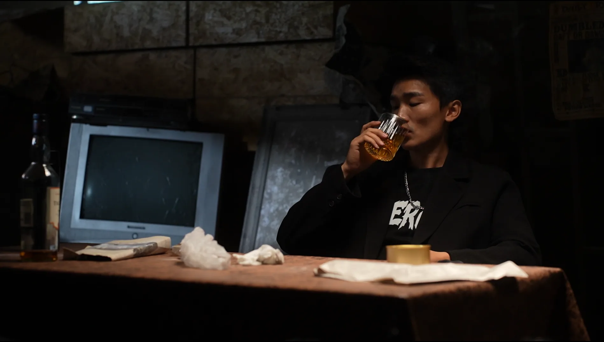

SONG ZIMING / SELECTED PORTFOLIO
Moving Image · Generative Media · Spatial Storytelling
Exploring narrative and the viewing experience
through film, generative imagery and stage visuals.
SELECTED WORKS
Selected Work
A selection of commercials, generative films, stage visuals and visual studies, spanning moving-image storytelling and experiments across media.

01 / 05
SCROLL / SWIPE
COMMERCIAL FILM
Commercial Film
Brand briefs, live-action production and post-production.
01 / COMMERCIAL FILM · 2025
Qingyun Shiyin
Commercial film / Brand storytelling
A live-action skincare commercial drawing on Eastern cultural references. Concept, visual style and shot rhythm come together in a cohesive brand narrative.




Creative Process
From the details of restoration to an experience of nature
01 / CONCEPT
Ceramic restoration as a narrative metaphor
I translated the brand's theme of repair into a visual metaphor of ceramic restoration. The protagonist moves from close attention to a handmade object into bamboo groves, streams and plant life. Touch, water and light connect her sensory experience with the idea of renewal.
02 / SHOT DESIGN
From intimate details to an open natural setting
The shot list organises the narrative through framing, camera position and movement. Close-ups of hands and ceramic details establish concentration in the restoration sequence; cuts between the protagonist, trees and running water open up the natural setting. Voiceover and sound connect these two scales of attention.
03 / PRODUCTION
On-set Photography
The location plan brought together the protagonist and details of nature at Yunqi Bamboo Trail, Jiuxi and nearby locations. The lighting approach combined available light with fill light, reflectors and shallow depth of field to preserve subtle textures. As director and producer, I translated narrative needs into location choices, shot planning and collaboration on set.
02 / COMMERCIAL FILM
Milk Powder: Behind the Deal
Commercial film / Contrasting narratives
A contrast between a gang-style deal and everyday student life highlights the product's rarity, with microscopic animation connecting the concept to its features.



03 / STAGE VISUAL · 2026
Elegant Rhythms of Legacy
Jinshahu Grand Theatre, Hangzhou / Concert visuals
Project director and lead visual creator for an interdisciplinary graduation production. Responsibilities included visual direction, music-led imagery, a unified art style, an angled dual-scrim projection system, and the design and script of a digital host.
Creative Process
Making visuals part of the music
How can stage visuals take part in musical expression, rather than remain a backdrop? This interdisciplinary concert began with the moods and cultural imagery of Chinese traditional music, bringing scrim projections, moving images and live piano performance into one audiovisual experience.
- Collaboration
- Digital media art × Piano performance
- Development
- September 2025 - January 2026
- Live Performance
- 15 January 2026
- Projection Setup
- Two angled scrims / 2920 × 1200 per surface
01 / SPATIAL DESIGN
Designing for two projection surfaces
The translucency of the scrims preserves the performers and the depth of the stage. Responding to the venue, I used two scrims set at roughly a right angle so that imagery could extend in two directions instead of remaining on a flat screen.
This arrangement shaped the content: ultrawide compositions had to account for the corner, horizontal continuity and the audience's main sightline, with key imagery placed where it could be seen clearly.
02 / VISUAL DEVELOPMENT
From cultural motifs to moving images
I defined a visual direction for each piece through its rhythm, mood and cultural context, then used AIGC to explore styles and generate source material. For porcelain, Nuo masks and fish lanterns, I compared outputs from different models before developing them into stage content with TouchDesigner and animation. AIGC supported the process rather than supplying the entire visual production.
Nuo-themed visual studies
Nuo masks, firelight and ritual spaces provide visual cues, with deep reds and gold giving the imagery a consistent mood.
Particles and audio-reactive visuals
In TouchDesigner, I adjusted particle count, scale, dispersion and movement, using audio input to connect sound and image. Recognisable cultural motifs became more fluid expressions of mood.
Digital host
I wrote the introductions, generated voiceovers with MiniMax and created the digital host with Jimeng. A consistent character is placed in different costumes, colours and settings for porcelain, fish lanterns and Nuo performance, extending the concert's visual language into its introductions.
03 / REHEARSAL & PRODUCTION
Calibrating visuals with the performance
I organised assets and cues in programme order, then refined visual entries, transitions and brightness during rehearsals in response to tempo, pauses and lighting. Projection intensity was reduced during dance and percussion passages; ambient light was lowered for piano mapping so that the performance remained the focus.
04 / REFLECTION
From visual effects to the viewing experience
Serve the performance
Visual complexity and brightness should respond to the performance. Images should follow the music rather than require a performance to fit pre-made visuals.
Continuity across the corner
Some ultrawide compositions still needed finer continuity at the corner. Future development should test two-surface composition and the main sightline earlier in the process.
Live response and calibration
Audio-reactive content was sensitive to equipment conditions and parameter changes. A stable live presentation requires repeated calibration; technical testing is part of visual design.
04 / AI SHORT DRAMA · 2026
Night Hacker
AI animated drama / Generative imagery
Cyberpunk cityscapes, glitch textures and rapid cuts create an atmosphere of suspense.
Visual Development
Character & Environment Design
01 / CHARACTER
Character Design
A grey hoodie, cargo trousers and a simple silhouette give the character an everyday appearance. The close-up and three-view sheet present facial features, costume proportions and the design from different angles.
02 / ENVIRONMENTS
Environment Design
Teal lighting contrasts with red neon and lanterns. Wet reflections and haze link the city exterior, alleyway and arcade, while ageing arcade cabinets and dense signage establish a retro-futurist atmosphere.
03 / COMPOSITION
Multi-angle Composition
Views of the same arcade range from wide compositions to details of the cabinets and floor. The sheet compares framing and viewpoints as references for shot selection and continuity between shots.
05 / SPANISH TRAILER
Spanish Drama Trailer
No Te Metas con la Niña Milagro de Papá
A promotional trailer for a Spanish-language short-form drama, focusing on narrative editing and pacing for an overseas audience.
Editing Process
Editing & Release
Editing Timeline
Release Record
More Generative Work10 works
AI SHORT DRAMA
AI Animated Dramas
Participated as an execution director in the full production workflow for AI animated dramas, from character and scene generation to image animation, compositing and editing.
EP.01
Pure Yang Physique
EP.02
A Forced Marriage
EP.23
Notes on Folk Taboos
EP.04
White Dragon, Flying Horse
EP.01
One Night with the CEO
EP.01
The All-Powerful Imperial Guard
EP.01
The Doctor and the CEO
AI COMMERCIAL · 2024
Jin Nong's Plum Blossom Album
A promotional film for Jin Nong's Plum Blossom Album at Xiling Yinshe, Hangzhou. Midjourney, Kling and Runway supported concept development, frame generation, animation, editing and post-production within an AI-based workflow.
AI COMMERCIAL
Payment Without Borders
An AI-generated journey through retro-futurist, magical and medieval worlds. Characters overcome obstacles before returning to the present, expressing the idea of payment without borders.
AI COMMERCIAL
Core of Day and Night
Cosmic imagery draws a parallel between seven billion years of the universe and a brand's seventy years of battery-making. AIGC connects the energy of the early universe with the product narrative.
06 / PHOTOGRAPHY
Landscape & Space
Observations of light, environment and space
Restrained compositions explore natural light, spatial depth and fleeting order encountered while travelling, capturing the mood of each environment.
07 / VISUAL STUDIES
Visual Studies
AR compositing / Brand visuals / Mixed-media practice
A collection of AR city composites, Taoyou brand visuals, After Effects motion studies and experiments across media.
01 / COMPOSITING
6 VISUAL STUDIES
AR City Composites
02 / BRAND VISUAL
3 KEY VISUALS
Taoyou Brand Visuals
03 / AFTER EFFECTS
5 MOTION STUDIES
After Effects Studies
Hide Studies
Studies exploring motion graphics, particle effects, compositing rhythm and visual style.
STUDY 01
Motion Graphics
STUDY 02
Visual Compositing
STUDY 03
Particle Studies
STUDY 04
Transitions
STUDY 05
Combined Effects
ABOUT
About Me
I am Song Ziming. My practice spans live-action filmmaking, generative imagery and stage visuals. I explore how rhythm and spatial composition shape stories and the experience of watching them.
From directing and producing commercials to editing short-form dramas and designing stage projections, I look for forms that serve each story. Tools and technology are part of the process; mood, narrative rhythm and the viewer's experience remain my focus.
Projects & Experience
Beiguang Xinrong (Beijing) Media Technology
Coordinated the full AIGC production workflow for AI animated dramas, including characters, scenes, animation, compositing and editing.
Elegant Rhythms of Legacy · Jinshahu Grand Theatre, Hangzhou
Project director and lead visual creator, responsible for stage visuals, reinterpretation of folk motifs and a dual-scrim projection system.
Jin Nong's Plum Blossom Album · Xiling Yinshe, Hangzhou
Created an AIGC promotional video, from concept and prompts to motion generation, editing and post-production.
Interesting Stories of Chinese Idioms · CCTV Children's Channel
Core team member responsible for animation style transfer with DomoAI and effects refinement in After Effects.
Awards & Recognition
17th National College Student Advertising Competition
Qingyun Shiyin: First Prize in Zhejiang Province; Second Prize nationally.
13th Future Designer National College Digital Art & Design Competition
First Prize in Zhejiang Province.
National 3D Digital Innovation Design Competition · AI + 3D Track
Grand Prize in Zhejiang Province; Third Prize nationally.
National-Level College Student Innovation & Entrepreneurship Project
Participated in projects exploring AI integration in animation and the generation of corporate promotional videos.
CONTACT
Contact
- 18179547835@163.com
- Phone
- 18867150630
- m1261540076